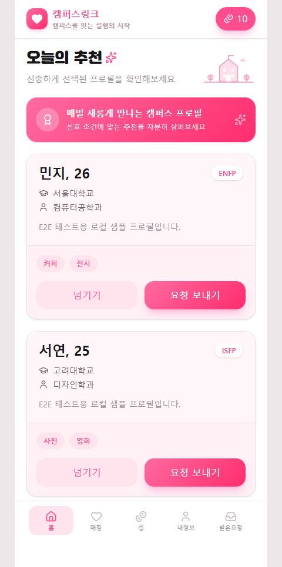
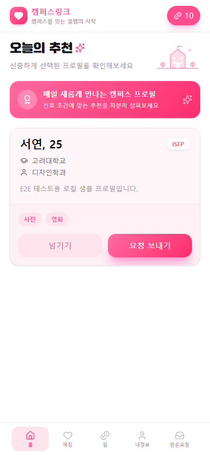
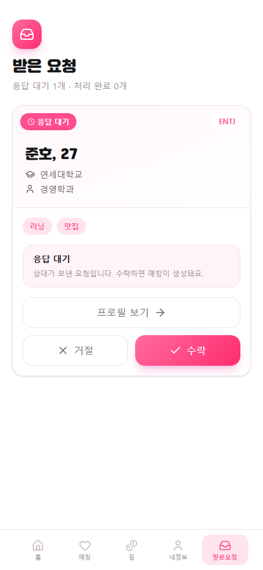
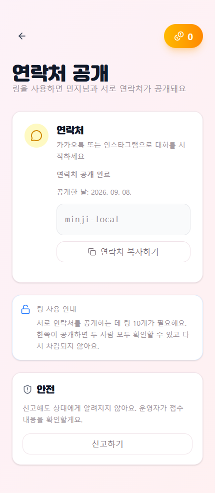
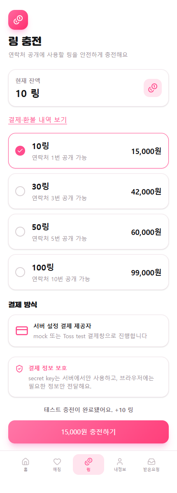
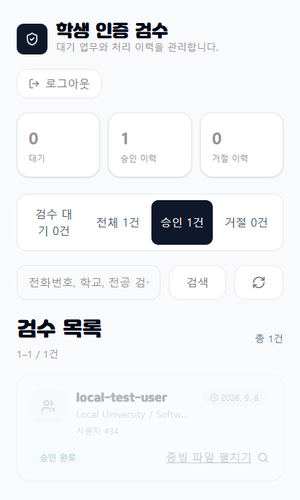

CONTACT
BACKEND DEVELOPER
강주형
신입 백엔드 개발자
사용자가 안정적으로 이용할 수 있는 서비스를 만드는 신입 백엔드 개발자입니다.
대학생 소개팅 서비스와 이벤트 예약 서비스를 개발하며 인증, 예약·매칭, 결제 흐름을 구현했습니다.
데이터 정합성과 예외 상황을 고려해 문제를 해결하는 개발자가 되고자 합니다.
BACKGROUND
이력 및 연락처
EDUCATION
건국대학교(서울) 컴퓨터공학부
졸업 · 2018.03 — 2025.08 · 3.31 / 4.5
타입스크립트 웹 풀 사이클 개발 과정
2024.08 — 2025.02 · React, Node.js
QUALIFICATIONS
SQLD · ADsP
SQL 개발자 · 데이터분석 준전문가 · 2026.06
OPIc IH
2025.10
육군 병장 만기 전역
2019.04 — 2020.11
CORE STACK
핵심 기술
- Backend
- Java 21 · Spring Boot · JPA · Spring Security · REST API
- Data
- MySQL · Redis · Flyway
- Deploy
- Docker · Docker Compose · AWS EC2 · AWS Lightsail
- Workflow
- Git · GitHub · Codex · Campuslink Harness
SELECTED WORK
프로젝트
01
Campuslink
검증 기반 대학생 소개팅 서비스
학생 인증을 거친 대학생이 매일 추천된 프로필을 보고 소개팅을 요청·수락할 수 있는 서비스입니다. 매칭 후에는 링을 사용해 서로의 연락처를 공개합니다.
인증과 세션 보안
전화 OTP, HttpOnly JWT Cookie, Redis Refresh Token Rotation과 CSRF 방어를 조합해 인증·세션 흐름을 구성했습니다.
토큰 결제 정합성
원장과 Token Lot 모델에 비관적 락, 멱등성, 상태 전이를 적용해 구매·연락처 공개·환불의 중복 처리를 방지했습니다.
외부 연동과 배포
Toss Payments의 성공 페이지·Webhook·복구 요청을 단일 처리 흐름으로 다루고, SOLAPI 발송에는 Outbox와 Lease Worker를 적용했습니다. Docker Compose와 AWS Lightsail 기반 Staging 환경을 구성했습니다.
로컬 검증 화면
모든 화면은 실제 개인정보·결제 정보 없이 로컬 더미 데이터와 mock 결제로 재현했습니다.






핵심 API 흐름
- 인증OTP 검증 → HttpOnly JWT Cookie → Redis Refresh Token Rotation
- 추천·요청추천 조회 → 요청 생성 → 상대 수락 → 매칭 생성
- 토큰·연락처주문 생성 → mock 확인 → Token Lot 차감 → 연락처 공개
- 운영 검수pending 조회 → 승인 상태 전이 → 사용자 온보딩 완료
02
Reserva
이벤트 예약 서비스
사용자는 관심 있는 이벤트를 탐색·예약하고, 주최자는 이벤트를 만들고 예약 현황을 관리하는 이벤트 예약 서비스입니다. 예약 재고를 별도 모델로 관리해 동시 요청에서도 정합성을 유지하도록 구현했습니다.


이벤트 탐색
이벤트 목록에 검색·카테고리 필터·섹션별 탐색·페이지네이션을 제공하고, QueryDSL로 동적 조회 조건을 구성했습니다.
예약과 내 활동
이벤트 상세에서 예약을 생성하고, 내 예약 목록·상세 조회와 취소 흐름, 찜 기능과 대시보드 요약 정보를 구현했습니다.
주최자 관리
주최자가 이벤트를 생성하고 본인 이벤트·예약 현황을 관리하도록 구성했으며, 예약 전 조건에서만 수정·삭제할 수 있게 제어했습니다.
예약 재고와 동시성 제어
이벤트 정보와 예약 재고를 분리하고, DB 락과 트랜잭션으로 동시에 들어온 예약 요청의 초과 예약을 방지했습니다.
탐색과 인증
이메일/비밀번호 로그인과 Google OAuth가 같은 JWT 인증 계약을 사용하도록 구현했습니다.